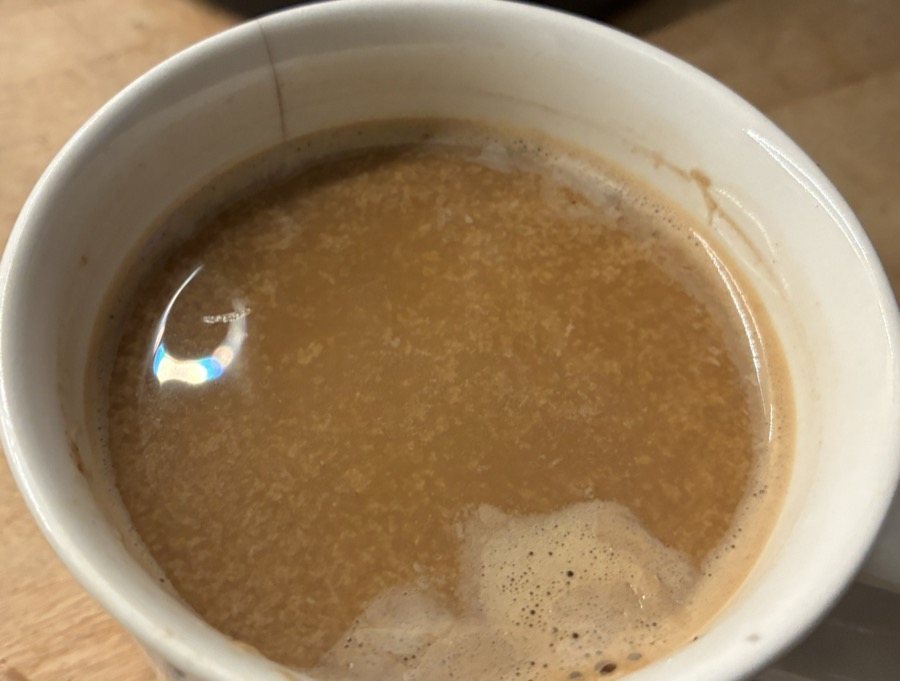

Hilfekarten
Erst selbst probieren. Jede Karte deckt ihre Hilfe in Stufen auf, so wenig wie möglich, so viel wie nötig.
Hilfe zu 1b
Hilfe zu 2b
Hilfe zu 3a
Hilfe zu 3b
Hilfe zu 4a
Hilfe zu 4b
Hilfe zu 4c
Vertiefungen
★ = vertiefend · ★★ = anspruchsvoll. Die Ergebnisse gehören in Ihre Unterlagen; die Abbildungen und Werkzeuge helfen beim Denken, sie ersetzen keine Lösung.
Wann verschwindet die Ladung?
Der isoelektrische Punkt ist der pH-Wert, bei dem sich positive und negative Ladungen eines Proteins ausgleichen, wie beim Glycin-Zwitterion aus Sitzung 05. Der Regler rechnet mit einem Modellprotein, die Zahlen sind ausgedacht, liegen aber in einem für Sojaproteine plausiblen Bereich.
Warum gerinnt Tofu mit Salz?
Klassischer Tofu gerinnt durch Magnesium- oder Calciumsalze, der pH-Wert ändert sich dabei kaum. Calcium-Ionen vernetzen Sojaproteine.
Molke und Casein im Bruch
Erhitzt man Milch kräftig, bindet sich β-Lactoglobulin über Disulfidbrücken an die Oberfläche der Caseinmizellen. Säuert man danach an, fällt es mit aus.
Flocken im Kaffee: auch schon Koagulation?
Gibt man Sojadrink in heißen Kaffee, sieht man oft feine Flocken (Foto: Kaffee mit Sojadrink, in der Mikrowelle erhitzt). Ist der Kaffee dafür sauer genug wie der Zitronensaft im Ricotta-Rezept, oder reicht schon eine leichte Senkung des pH-Werts?
Filterkaffee hat pH 4,85–5,10, Zitronensaft etwa pH 2–2,5 (Rao, Fuller, Sci. Rep. 8, 2018, 16030). Der isoelektrische Bereich der Sojaproteine liegt bei pH 4,5–5,9. In Laborversuchen trennten sich Sojadrink-Kaffee-Gemische nur oberhalb einer bestimmten Temperatur in zwei Phasen und wurden beim Abkühlen oder mit mehr Sojadrink wieder einheitlich (Brown et al., Food Hydrocolloids 95, 2019, 462).
